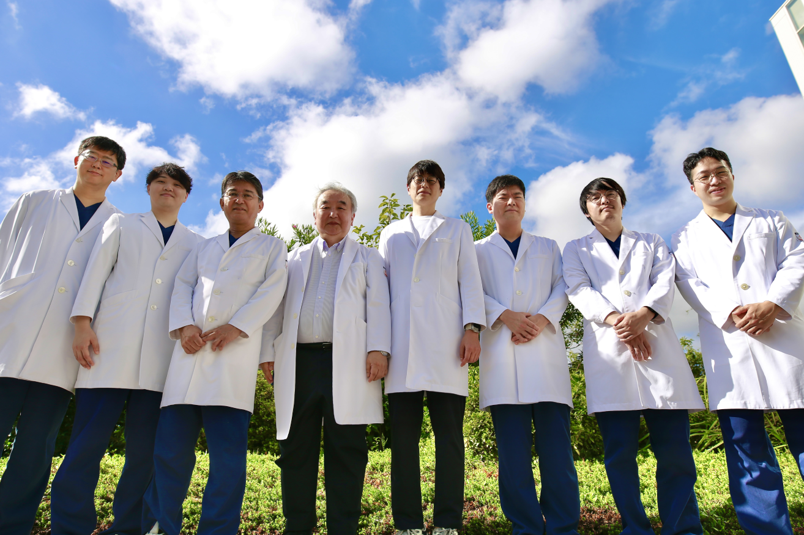

もどる
もどる心房細動に対する最後の砦
Maze（メイズ）とは心房細動に対する治療法
不整脈は、脈が乱れることであり、この中には脈の数が多くなるもの（頻脈）、少なくなるもの（徐脈）、ばらばらで不規則になるものに大きく分類されます。脈の数が多くなる心房細動という不整脈があると、心房に血のよどみができ血栓という血の塊ができやすくなります。血栓ができ頭に飛んでいけば脳梗塞となり、麻痺や意識障害が起こります。また、心房細動の状態では心房が動かない状態なので心臓から送り出される血液の量は減少します。さらに、心臓が規則正しく拍動しないために脈の不整を自覚します。心房細動を治すことによりこれらの問題が解決されます。 現在ではカテーテル治療が主流となっているので、“不整脈治療で手術？？”と思われる方も多いと思います。
対象となる患者さん
僧帽弁や大動脈弁などの弁膜症や心房中隔欠損、冠動脈疾患などの器質的心疾患に伴う心臓手術を受ける患者さんで、心房細動を併発している場合や、心臓内に血栓ができて薬で溶けにくく、過去に脳梗塞を起こしたことのある患者さん、カテーテルアブレーションで治療できなかった患者さんが対象となります。
治療方法
この手術は、心房細動を引き起こす心房内に生じる異常な電気伝導を遮断するために、心房の中をまるで迷路(英語でメイズ)のように複雑な切開を入れ、、再度縫い合わせるものでした。これにより、異常な電気伝導が断ち切られ、心房細動から規則正しい脈に回復させることが出来るようになりましたが、心筋を一時的に切り、再度縫い合わせるのには時間がかかり、出血のリスクが高いという問題がありました。近年、高周波の電流で心筋の変性壊死を作成させ、心筋を切った場合と同じ効果が得られる高周波デバイスが開発され、時間の短縮と出血リスクの軽減が得られるようになり、安全に手術が行われるようになっています。また当院では、切開する範囲を5-7cmにとどめる低侵襲心臓手術「MICS」でメイズ手術を可能にするために、cryo ICEを導入しました。この医療機器は高周波デバイスではなく、クライオアブレーションと同じように冷凍凝固壊死を心筋に作成する医療機器です。亜酸化窒素ガスを使用し-55℃から-70℃で冷凍凝固を作成します。また冷凍直後も組織からの取り外しが容易となっており、先端形状の調整とプローブ先端が最大10cm延長できるため、個々の患者さんに応じた手術が可能です。
心臓血管外科の紹介
1973年（昭和48年）の心臓血管外科開設以来、総開心術症例は2014年1月に14000例を超え、国内有数の症例数を有する施設として順調に発展してまいりました。2016年の心臓・大血管手術件数は643例で、全国でもトップレベルの症例数となっています。 2008年秋から大動脈瘤に対するステントグラフト治療や、2013年10月から重症大動脈弁狭窄症に対する経カテーテル大動脈弁置換術（TAVI）といった患者さんの負担が少ない治療も積極的に行っています。 成人の心臓・大動脈疾患、末梢血管手術すべてに対応可能です。
